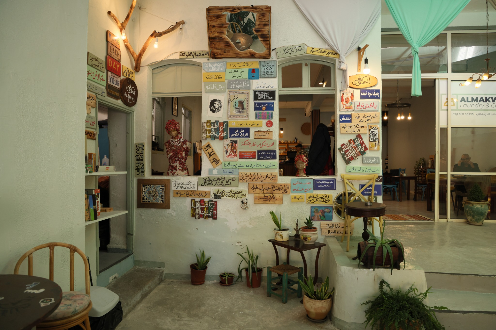
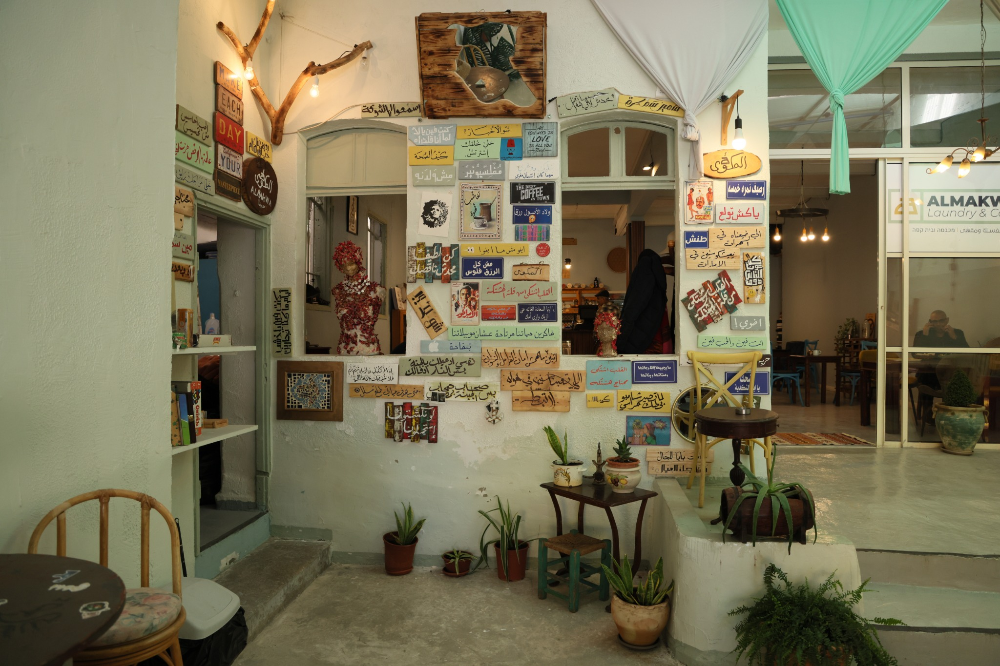

אודותינו
המסעדה הביתית שלנו נולדה מתוך אהבה גדולה לבישול ביתי ומסורות משפחתיות. בשנת 2005 החליט מייסד המסעדה, שף יוסי בן‑ציון, לפתוח מקום שיזכיר לכל אחד ואחת את הטעמים של בית אמא. יוסי גדל בבית שבו סירי המרק תמיד היו על האש והריחות נעו בין מאפים חמים לקפה טרי. לאחר שנים רבות בתחום הקולינריה, הוא החליט להחזיר את הבישול הפשוט והטעים למרכז הבמה.
אנו מתמחים במאכלים ביתיים עם טוויסט מודרני. מקפידים להשתמש בחומרי גלם טריים מהשוק המקומי ומבשלים ללא קיצורי דרך, בדיוק כפי שעשו הסבתות שלנו. מעבר למטבח, המשימה שלנו היא ליצור תחושה של חמימות, ביתיות ונוחות לכל מי שנכנס בדלת. מהרגע שתשבו לשולחן תרגישו שאתם חלק ממשפחה גדולה ומתוקה.
שירותים נוספים
לא רק אוכל טוב מחכה לכם אצלנו – אנו שמחים להציע גם שירותי כביסה מקצועיים בתוך מתחם המסעדה. תוכלו להביא את הבגדים שלכם לכיבוס בזמן שאתם מתפנקים בארוחה, ולקבל אותם נקיים וריחניים כשתסיימו. השירות מתבצע על ידי צוות מנוסה ושימוש במכונות מתקדמות, כך שתוכלו להיות רגועים שהבגדים בידיים טובות.
השירות פועל בכל ימי השבוע בשעות פתיחת המסעדה. אם יש לכם שאלות או בקשות מיוחדות, צוות הצוות שלנו ישמח לענות ולעזור.

גלריה
קצת מהאווירה והטעמים שלנו כדי שתוכלו להרגיש בבית עוד לפני שאתם מגיעים.


 


צור קשר
נשמח לשמוע מכם! מלאו את הטופס ונחזור אליכם בהקדם.